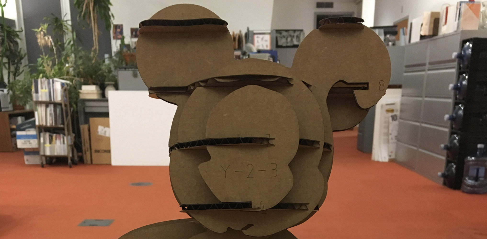
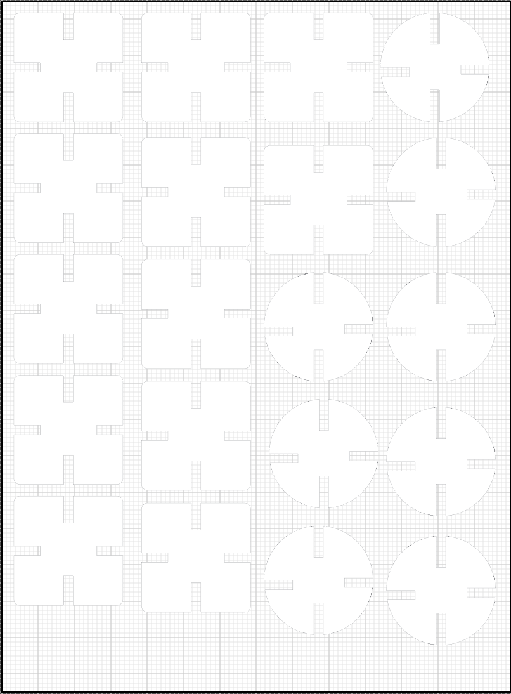
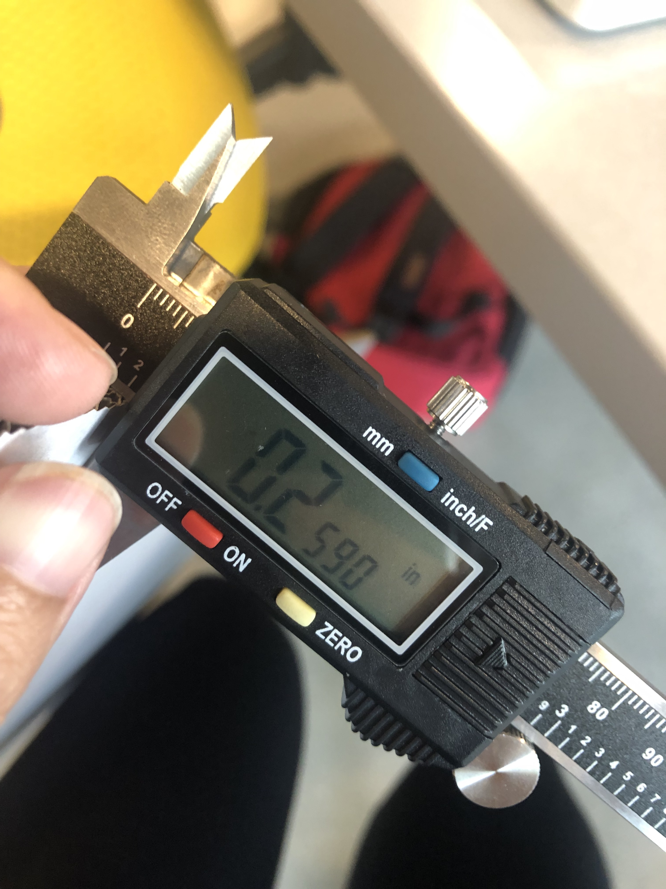
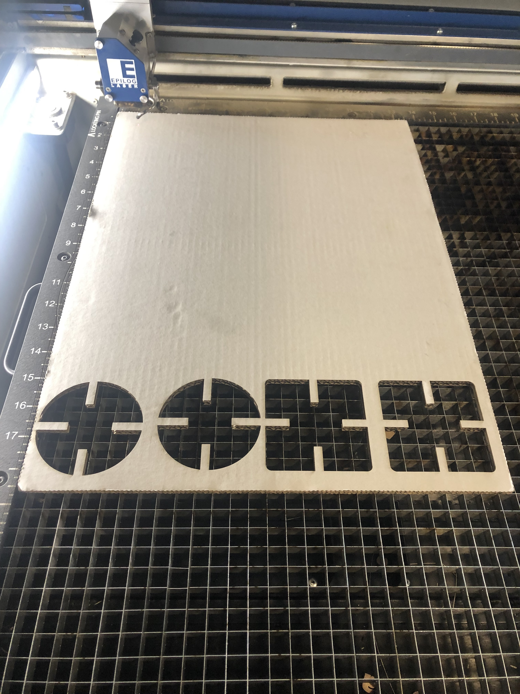
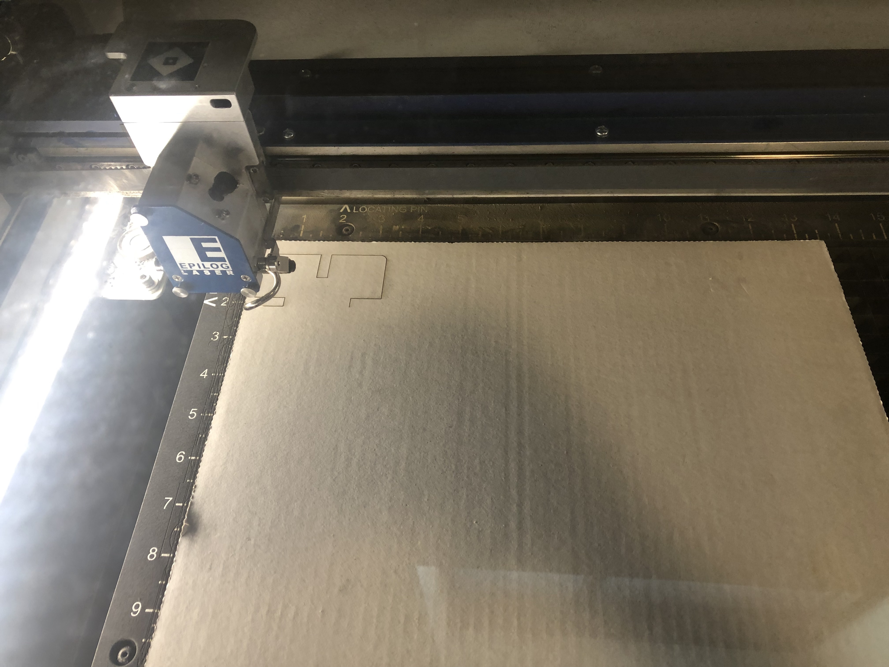
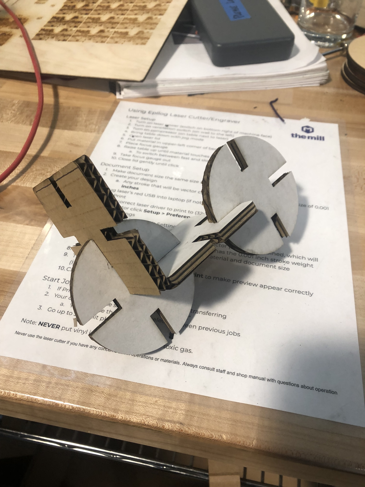

Assignment 1: Laser Cut Press Fit Construction Kit

Process:
I started this assignment by looking up different examples of Press Fit Construction Kits, and I got really excited about some of the examples. I was hoping to do something really ambitious like a press construction kit Mickey Mouse, but I realized that I needed to scale down and test things out first before going head first into something so complex.

I ended up drawing random shapes on
illustrator to see how I felt about them. I ended up deciding on some square and circle shapes.
I used the calibers to measure the thickness of the cardboard and D'Marcus Butler helped me figure out a more efficient way to create the shapes I needed,
so I was able to streamline how I made the shapes.

Hannah Nursalim helped me set up the printer and the first issue I came across was that I didn't realize how big
the shapes I created were. They were like 8 inches! I had to redo the shapes at a smaller scale.
A happy accident that occured was that when I scaled the shapes down in size, they still came out larger than I thought they
would be (3 inches) during the test cut but this worked because of how thick my cardboard was (.0259 inches thick).
Making the shapes smaller would have not made my design look as good.


After I figured out the sizing and the cutting kept going, it was basically smooth sailing.



Overall, I was pleased with what I came up with once I put it together.
The cardboard was sturdy enough that I could move the pieces around in any way to make any shape.
Shoutout to D'Marcus and Hannah for all their help!
Please see illustrator file in this Google Folder (UW ID required) here